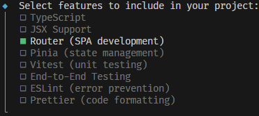
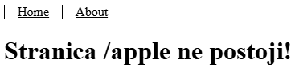
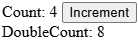

Programsko inženjerstvo
Nositelj: doc. dr. sc. Nikola Tanković
Asistent: mag. inf. Alesandro Žužić
Ustanova: Sveučilište Jurja Dobrile u Puli, Fakultet informatike u Puli
 Fakultet informatike u Puli
Fakultet informatike u Puli
[6] Vue Router i Pinia
Vue Router omogućuje jednostavno upravljanje navigacijom i rutama u Vue aplikacijama, dok Pinia pruža moderan i intuitivan način upravljanja globalnim stanjem (state management).
Posljednje ažurirano: 11. svibnja 2025.
Vue Router
Do sad nismo koristili url linkove za navigaciju po stranici unutar internetskog preglednika. Zato postoji službena Vue.js paket Vue Router koja omogućuje dinamičko upravljanje navigacijom, ugniježđenim rutama, uz podršku za povijest, tranzicije i naprednu kontrolu putanje s modularnom konfiguracijom.
Sada ćemo postaviti situaciju u kojoj bi nam Vue Router poslužio. Imamo jednu običnu stranicu za praćenje kolekcije vinyla. Stranica ima tri komponente koje se ponašaju kao stranice: LogIn.vue, SignUp.vue i Collection.vue.

Unutar App.vue i svih tih komponenti koristimo composable funkciju useUser koja se ponaša kao globalni spremnik varijabli i funkcija za autentifikaciju i prosljeđivanje varijabli.
//useUser.js
import { ref, computed } from 'vue';
const user = ref({ name: 'Markom', email: 'mmarkic@gmail.com' });
const registration = ref(false);
export default function useUser() {
...
}
//app.vue
<Transition>
<Collection v-if="user"/>
<LogIn v-else-if="!registration"/>
<SignUp v-else/>
</Transition>
Kombinacijom ovih metoda vršimo prijelaze između određenih prikaza koristeći v-if direktivu. Međutim, možemo uočiti nekoliko problema s ovim pristupom. Uvijek se nalazimo na istoj stranici, odnosno URL stranice se ne mijenja. Ako želimo dodati više stranica, logika za provjeru trenutačne stranice postaje složenija. Također, prilikom svakog osvježavanja stranice sve varijable se resetiraju – to se može riješiti spremanjem varijabli u lokalnu pohranu (local storage) i ručnim učitavanjem podataka pri pokretanju. Međutim, sve ove probleme Vue Router rješava umjesto nas.
Instalacija
Da bi uopće mogli koristiti paket Vue Router moramo ga instalirati.
- Slučaj: ako već imamo postojeći projekt onda moramo instalirati paket:
npm install vue-router@4
Prvo što treba napraviti nakon instalacije je napraviti dvije nove mape u src mapi:
routermapa - sadržiindex.jsdatoteku u kojoj se nalazi logika router-aviewsmapa - sadrži.vuedatoteke koje se ponašaju kao zasebne stranice, praktički identičnacomponentsmapi
Napravit ćemo dvije obične komponente u views mapi:
AboutView.vueHomeView.vue
<!--AboutView.vue-->
<template>
<h1> This is an about page </h1>
</template>
<!--HomeView.vue-->
<template>
<h1> Welcome </h1>
</template>

Zatim ćemo namjestiti logiku router-a u index.js datoteci unutar router mape:
import { createRouter, createWebHistory } from 'vue-router' // učitavanje potrebnih funkcija
import HomeView from '../views/HomeView.vue' // učitavanje komponente
// izrada routera
const router = createRouter({
history: createWebHistory(import.meta.env.BASE_URL), // pamćenje navigacije/promjene stranica
routes: [
{
path: '/', // url link stranice
name: 'home', // naziv stranice
component: HomeView, // komponenta stranice
},
{
path: '/about',
name: 'about',
component: () => import('../views/AboutView.vue'), // 2. način učitavanje komponente
},
],
})
export default router // izvoz routera
Nakon toga možemo registrirati router da radi unutar aplikacije, tako da ga učitamo u main.js datoteci:
import './assets/main.css'
import { createApp } from 'vue'
import App from './App.vue'
import router from './router' // učitavanje router paketa iz router mape
const app = createApp(App)
app.use(router) // korištenje router paketa
app.mount('#app')
Tek onda možemo omogućiti prikaz router stranica u App.vue datoteci:
<script setup>
// Učitavanje router komponenti iz router paketa
import { RouterLink, RouterView } from 'vue-router'
</script>
<template>
<nav>
<!-- RouterLink komponente se ponašaju kao <a></a> elementi-->
<RouterLink to="/">Home</RouterLink>
<RouterLink to="/about">About</RouterLink>
</nav>
<!-- RouterView komponenta omogućuje prikaz stranica -->
<RouterView />
</template>
<style scoped>
a.router-link-exact-active {
color: blue;
}
a {
color: black;
display: inline-block;
padding: 0 1rem;
border-left: 1px solid black;
}
</style>

- Slučaj: ako radimo novi projekt onda možemo uključiti paket pri instalaciji:
npm create vue@latest

- U tom slučaju nam je sve namješteno što smo radili u prvom slučaju.
Router struktura
Kada namjestimo početnu router logiku, ona nam može izgledati nešto ovako:
import { createRouter, createWebHistory } from 'vue-router' // učitavanje potrebnih funkcija
import HomeView from '../views/HomeView.vue' // učitavanje komponente
// izrada routera
const router = createRouter({
history: createWebHistory(import.meta.env.BASE_URL), // pamćenje navigacije/promjene stranica
routes: [
{
path: '/', // url link stranice
name: 'home', // naziv stranice
component: HomeView, // komponenta stranice
},
{
path: '/about',
name: 'about',
component: () => import('../views/AboutView.vue'), // 2. način učitavanje komponente
},
],
})
export default router // izvoz routera
Možemo vidjeti da učitavamo dvije funkcije iz router paketa:
createRouter()- služi za izradu routera prema danim opcijamacreateWebHistory()- kreira HTML5 povijest za navigaciju i prikaz URL-a
Funkcija createRouter() prima objekt kao argument koji sadrži opcije za izradu routera. Nama su zasad bitne samo dvije opcije:
- history - definiramo vrstu povijesti koju koristimo (najčešće
createWebHistory()iako ima i drugih) - routes - definiramo rute aplikacije
Kada koristimo createWebHistory(), URL će izgledati "normalno", npr. https://example.com/user/id.
Međutim, ako korisnici direktno u pregledniku otvore https://example.com/apple, dobit će 404 grešku – jer server ne prepoznaje tu rutu. Da bismo riješili problem, dovoljno je dodati jednostavnu catch-all fallback rutu, više o tome kasnije.
I na kraju imamo export default router čime zapravo izvozimo router objekt tako da ga možemo učitati i koristiti u main.js datoteci.
Rute
U prošlom poglavlju smo spomenuli da createRouter() stvara router koristeći objekt s danim opcijama gdje je jedna među njima routes.
Routes ja zapravo lista ruta kojima korisnici mogu pristupiti u aplikaciji. Svaka ruta je isto zapravo objekt koji sadrži opcije rute, među kojima su nam bitne tri:
- path - predstavlja url link rute (npr.
/,/about,/users/:username, ...) - name - predstavlja naziv rute (npr. home, about, user, ...)
- component - predstavlja komponentu koja će se učitati kad se nalazimo na toj ruti
Komponente ruta se nalaze u views mapi
Dinamičke rute
U većini slučajeva imat ćemo određene rute koje se ponavljaju više puta ili služe za prikaz određenih promjenjivih podataka. Na primjer ako imamo rutu /users/marko i želimo prikazati korisnika Anu onda bi trebali imati i rutu /users/ana. Da ne stvaramo rutu za svakog korisnika zasebno. U tom slučaju ćemo izraditi jednu dinamičku rutu koja može primiti korisničko ime kao parametar.
Tako da umjesto da imamo:
{
path: '/users/marko',
component: UserView,
},
{
path: '/users/ana',
component: UserView,
},
Napravit ćemo:
{
path: '/users/:username',
component: UserView,
},
Jedino što smo promijenili je da smo dodali :username umjesto pojedinačnog korisničkog imena.
<!--UserView.vue-->
<template>
<h1> Korisnik </h1>
</template>
Sada ako odemo na stranicu korisnika, npr. /users/ivan radit će kako spada.

Međutim sada kada imamo taj parametar možemo mu i pristupiti putem $route.params.username sintakse.
<!--UserView.vue-->
<template>
<h1> Korisnik: {{ $route.params.username }} </h1>
</template>

Drugi način na koji možemo pristupiti parametru username je da koristimo defineProps() funkciju:
<script setup>
defineProps(['username'])
</script>
<template>
<h1> Korisnik: {{ username }} </h1>
</template>
Da bi to radilo trebamo u rutu nadodati opciju props: true:
{
path: '/users/:username',
component: UserView,
props: true
},
Kod izrade dinamičkih ruta može se koristiti regex za definiranje ugniježđenih parametara ili definiranje svojstva parametra. Ako se prisjetimo problema createWebHistory() funkcije, tu znamo da kod nepostojeći ruta dobivamo 404 grešku (npr. /apple).

Da korisnici ne dobivaju tu grešku, poželjno je da ih usmjerimo na stranicu koja će ih na to uputiti. Zato ćemo kreirati sljedeću dinamičku rutu:
{
path: '/:pathMatch(.*)*',
name: 'NotFound',
component: NotFound
},
<!--NotFound.vue-->
<template>
<h1> Stranica {{ $route.path }} ne postoji! </h1>
</template>

Ugniježđene rute
Kada radimo rute doći ćemo do situacije gdje nekoliko ruta imaju dio URL-a isti.
{
path: '/users/:username',
component: UserView,
},
{
path: '/users/:username/posts',
component: UserPostsView,
},
{
path: '/users/:username/avatar',
component: UserAvatarView,
},
Da ne ponavljamo cijelo vrijeme /users/:username, možemo ugnijezditi donje dvije rute kao djeca pod prvu rutu:
{
path: '/users/:username',
component: UserView,
children: [
{
path: 'posts',
component: UserPostsView,
},
{
path: 'avatar',
component: UserAvatarView,
},
]
},
Onda unutar rute user isto imamo <RouterView/>:
<script setup>
defineProps(['username'])
</script>
<template>
<nav>
<RouterLink :to="`/users/${username}/posts`">User posts</RouterLink>
<RouterLink :to="`/users/${username}/avatar`">User avatar</RouterLink>
</nav>
<h1> Korisnik: {{ username }} </h1>
<RouterView />
</template>
Preusmjeravanje i pseudonim
U određenim situacijama nam je poželjno da dva različita URL-a vode na istu stranicu. U tom slučaju onda stvaramo dvije rute:
{
path: '/',
name: 'home'
component: HomeView,
},
{
path: '/home',
name: 'home',
component: HomeView,
},
U ovom slučaju oba URL-a prikazuju istu stranicu, no što ako želimo da samo jedan URL predstavlja stranicu dok drugi samo preusmjerava na prvi. U tom slučaju koristimo redirect (preusmjeravanje) s jedne rute na drugu:
{
path: '/',
name: 'home',
component: HomeView,
},
{
path: '/home',
redirect: '/'
},
- Sada ako odemo na rutu
/homepreusmjerit će nas na rutu/što će se i prikazati i u URL-u.
Ako nam nije bitan URL onda može koristiti alias (pseudonim) čime dodjeljujemo jednoj stranici više URL-ova odjednom:
{
path: '/',
name: 'home',
component: HomeView,
alias: '/home'
},
- Sada ako odemo na rutu
/homeneće nas preusmjerit na rutu/ali će router znati da je to trenutačno aktivna ruta.
Navigacija
Možemo na tri načina navigirati po stranici, koristeći <RouterLink> ugrađeni element, koristeći router funkcije push(), replace() i go(), te ručnim tipkanjem URL-a stranice.
RouterLink
Vue router paket dolazi s dva ugrađena elementa: <RouterLink> i <RouterView/>. Dok nam RouterView služi za prikaz samih ruta, RouterLink se ponaša kao običan <a/> element gdje umjesto atribut href koristi atribut to.
<RouterLink to="/users/ivan">User</RouterLink>
s obzirom na to da koristimo Vue, znači da može atribut to vezati kao i sve druge atribute v-on direktivom : skraćeno.
<RouterLink :to="`/users/${username}`">User</RouterLink>
<!--ILI-->
<RouterLink :to="{ name: 'user', params: { username: 'ivan' } }">User</RouterLink>
Router cijelo vrijeme prati na kojoj se ruti nalazimo, što mu omogućuje da zna koji je trenutačni aktivni link to jest koji <RouterLink> element je trenutačno aktivan.
RouterLink se smatra aktivnim ako:
- Odgovara istom zapisu rute (tj. konfiguriranoj ruti) kao i trenutačna lokacija.
- Ima iste vrijednosti parametara kao i trenutačna lokacija.
<RouterLink> element zato ima dva argumenta za uređivanje izgleda osim class i style, a to su linkActiveClass i linkExactActiveClass.
<RouterLink ...
activeClass="border-indigo-500"
exactActiveClass="border-indigo-700">
Također možemo koristiti i <style> s predefiniranim klasama za uređivanje aktivnih linkova:
<style>
a.router-link-active {
color: blue;
}
a.router-link-exact-active {
color: red;
}
</style>
Ako imamo dva linka:
<RouterLink to="/users/ivan">
User
</RouterLink>
<RouterLink to="/users/ivan/avatar">
Role
</RouterLink>
Ako je trenutačna lokacija puta /users/ivan/avatar, tada se obje rute smatraju aktivnim, pa im se primjenjuje klasa router-link-active. No, samo je druga ruta točno aktivna (exact), pa bo joj se primijenila klasa router-link-exact-active.

Router funkcije
Kada želimo mijenjati rute putem funkcija iz drugih dijelova aplikacije bez korištenja elementa RouterLink u tom slučaju koristimo router funkcije.
import { useRouter } from 'vue-router'
const router = useRouter()
function goToUserIvan() {
router.push({ path: '/users/ivan' })
}
Primjeri korištenja:
// koristeći string
router.push('/users/ivan')
// koristeći objekt s putanjom
router.push({ path: '/users/ivan' })
// koristeći objekt s nazivom i parametrom
router.push({ name: 'user', params: { username: 'ivan' } })
Kada koristimo push() funkciju onda se pamti povijest navigacije što omogućuje korisniku da ide naprijed/nazad. U slučaju da ne želimo pamtiti navigaciju u određenim slučajevima, onda koristimo replace() funkciju.
router.push({ path: '/home', replace: true })
// isto što i
router.replace({ path: '/home' })
Ako želimo implementirati vlastitu navigaciju za ići naprijed i nazad po sučelju onda koristimo funkcije forward(), back() i go() koja za argument prima broj:
// idi naprijed za jedan zapis, isto kao router.forward()
router.go(1)
// idi natrag za jedan zapis, isto kao router.back()
router.go(-1)
// idi naprijed za tri zapisa
router.go(3)
// ne prikazuje grešku ako nema toliko zapisa
router.go(-100)
router.go(100)
Zaštita navigacije
Vue Router pruža funkcije koje se prvenstveno koriste za zaštitu navigacije, bilo preusmjeravanjem ili otkazivanjem. Korisno u slučaju kada želimo prikazati određene stranice samo autentificiranim korisnicima ili administratorima.
U tom slučaju možemo definirati globalnu zaštitu koristeći beforeEach() funkciju:
router.beforeEach(async (to, from) => {
if (
// provjeri je li korisnik autentificiran
!isAuthenticated &&
// ❗️ Izbjegni beskonačno preusmjeravanje
to.name !== 'Login'
) {
// preusmjeri korisnika na stranicu za prijavu
return { name: 'Login' }
}
})
Ako funkcija ništa ne vrati, onda ne vrši redirekciju i nastavlja prema planiranom putu, u suprotnom ako vratimo određen naziv ili rutu, vrši se redirekcija ka novoj ruti.
Vrlo je bitno paziti da kod zaštite navigacije ne izazovemo beskonačno preusmjeravanje rute u samu sebe ili cikličko preusmjeravanje!
Naravno, evo ispravljenog i jasnije objašnjenog opisa argumenata funkcije beforeEach:
Funkcija beforeEach() prima dva argumenta:
- to – objekt koji predstavlja rutu na koju aplikacija pokušava navigirati (odredišna ruta)
- from – objekt koji predstavlja trenutačnu rutu iz koje korisnik dolazi (polazna ruta)
Tranzicije
Za animaciju komponenti prilikom navigacije između ruta koristi se <RouterView> s v-slot. Unutar njega se komponenta stavlja unutar <transition> elementa:
<template>
<RouterView v-slot="{ Component }">
<transition>
<component :is="Component" />
</transition>
</RouterView>
</template>
<style>
.v-leave-active {
transition: opacity 0.5s ease;
position: absolute;
}
.v-enter-active {
transition: opacity 0.5s ease;
}
.v-enter-from, .v-leave-to {
opacity: 0;
}
</style>
Pinia

Pinia je paket za upravljanje stanjem (store) u Vue aplikacijama koji omogućuje dijeljenje stanja između komponenti i stranica. Međutim ovo nam zvuči vrlo poznato, zato što smo u prošloj skripti prošli composables što nam isto omogućuje dijeljenje stanja.
Pa čemu onda Pinia ako već postoji ugrađena funkcionalnost Composables koja radi istu stvar?
Jedina velika razlika je da se Pinia ukomponira u Vue Devtools što omogućuje u uvid stanje aplikacije to jest možemo promatrati i mijenjati stanje aplikacije.
U slučaju da želimo spremati stanje aplikacije u local storage umjesto da ručno implementiramo spremanje i dohvaćanje, postoji gotov paket pinia-plugin-persistedstate koji nam omogućuje efikasno i jednostavno spremanje stanja.
Pinia i Composables se tretiraju kao ekvivalente alati koji se mogu koristiti naizmjenično. No ta dva alata rješavaju različite vrste problema i odgovaraju različitim slučajevima korištenja.
Composables – koristimo ih kada želimo pohraniti „jednokratne” podatke koje je razumno prosljeđivati unutar jednog prikaza (view) ili modula. Dobar primjer bi bila stranica s detaljima proizvoda – dohvaćamo podatke u onMounted() funkciji, zatim ih koristimo za prikaz informacija o proizvodu. Možemo ih razumno proslijediti komponentama unutar prikaza (npr. odjeljak s opisom, galerija slika itd.), ali trebamo izbjegavati prosljeđivanje unucima ili praunucima – to je tzv. prop drilling što brzo postaje neuredno i nepregledno. Također, te podatke ne trebamo izvan prikaza u kojem smo ih dohvatili.
Pinia – koristimo je kada želimo pohraniti podatke koji se koriste u više prikaza ili su skupi za dohvat. Primjer bi bila pohrana korisničkih podataka nakon prijave kako bi ti podaci bili dostupni u svim dijelovima aplikacije bez ponovnog dohvaćanja. Ako se vratimo na primjer proizvoda – koristili bismo Piniu za pohranu liste proizvoda, tako da ako korisnik prelazi između liste i detalja proizvoda, ne moramo ponovno dohvaćati podatke svaki put – što znači bolje performanse aplikacije.
Postoje i slučajevi kada je Pinia korisna i za podatke koji su razasuti po različitim razinama hijerarhije unutar jednog prikaza. To je prilično uobičajeno kod složenijih prikaza s više razina ugnježđivanja, gdje je nepraktično i neuredno prosljeđivati podatke s viših razina na niže. Ako dođemo do te točke, vjerojatno je bolje samo napraviti Pinia store i pristupati podacima direktno iz tih komponenti. Tako također izbjegavamo potrebu za prosljeđivanjem događaja prema gore kroz više razina – – to jest tzv. bubble up events - što je još gore od samog prosljeđivanja podataka. Jednostavno izmijenimo podatke iz duboko ugniježđene komponente direktno.
Composables i Composition API služe kao način organizacije koda prema funkcionalnostima (feature-first), a ne prema komponentama (component-first) – doslovno kroz kompoziciju.
To znači da su Composables dijeljena funkcionalnost, a ne dijeljeno stanje.
Određene funkcionalnosti mogu sadržavati unutarnje (dijeljeno; globalno) stanje, ali to nije primarna svrha Composables.
Pinia, s druge strane, služi isključivo za dijeljenje stanja. Može sadržavati funkcionalnosti za upravljanje tim stanjem, ali nema smisla bez samog stanja.
Naravno, svi gore navedeni argumenti predstavljaju uobičajene prakse i koncepte koji se često primjenjuju u razvoju, ali to ne znači da je pogrešno koristiti samo composable funkcije za upravljanje cijelim stanjem aplikacije — ako to odgovara potrebama konkretnog projekta, takav pristup je potpuno valjan.
Instalacija
Da bi uopće mogli koristiti paket Pinia moramo ga instalirati.
- Slučaj: ako već imamo postojeći projekt onda moramo instalirati paket:
npm install pinia
Zatim ćemo registrirati Piniu u Vue unutar main.js datoteke:
import './assets/main.css'
import { createApp } from 'vue'
import { createPinia } from 'pinia' // učitavanje funkcije iz pinia paketa
import App from './App.vue'
const pinia = createPinia() // izrada pinije
const app = createApp(App)
app.use(pinia) // // korištenje pinije
app.mount('#app')
Sada kada je Pinia ubačena u aplikaciju, možemo napraviti novu mapu stores unutar src mape i napraviti novu datoteku counterStore.js:

- Naziv svakog novog spremnika (store) uobičajeno slijedi konvenciju imenovanja u obliku
<naziv>Store
Onda možemo unutar te datoteke definirati spremnik s pomoću funkcije defineStore() koja zapravo i stvara novi spremnik:
import { defineStore } from "pinia"
import { ref, computed } from "vue"
export const useCounterStore = defineStore('counterStore', () => {
const count = ref(0)
const doubleCount = computed(() => count.value * 2)
function increment() {
count.value++
}
return {
count,
doubleCount,
increment
}
})
Sada taj novostvoreni spremnik counterStore možemo koristiti bilo gdje u aplikaciji:
<!--App.vue-->
<script setup>
import { useCounterStore } from "@/stores/counterStore.js"
const counterStore = useCounterStore();
</script>
<template>
<div>
Count: {{ counterStore.count }}
<button @click="counterStore.increment()">Increment</button>
<br> DoubleCount: {{ counterStore.doubleCount }}
</div>
</template>

- Slučaj: ako radimo novi projekt onda možemo uključiti paket pri instalaciji:
npm create vue@latest

- U tom slučaju nam je sve namješteno što smo radili u prvom slučaju.
Pinia struktura
Kada napravimo prvi spremnik on nam može izgledati nešto ovako:
import { defineStore } from "pinia" // učitavanje pinia funkcije
import { ref, computed } from "vue"
// definiranje spremnika
export const useCounterStore = defineStore('counterStore', () => {
// STATE - reaktivne varijable (ref)
const count = ref(0)
// GETTERS - computed funkcije
const doubleCount = computed(() => count.value * 2)
// ACTION - obične funkcije
function increment() {
count.value++
}
// izvoz odabranih varijabli i funkcija
return {
count,
doubleCount,
increment
}
})
Ako budete gledali Pinia dokumentaciju uočit ćete da vrlo često u svojim primjerima koristi drukčiju sintaksu ove ove koju smo i napisali, to jest izgleda ovako:
import { defineStore } from "pinia"
export const useCounterStore = defineStore('counter', {
state: () => ({
count: 0
}),
getters: {
doubleCount: (state) => state.count * 2,
},
actions: {
increment() {
this.count++
},
},
})
To je zato što Pinia ima dva načina na koja se mogu definirati spremnici, putem Option Stores i Setup Stores. Gdje mi koristimo Setup Stores što je u stvari Composition API dok Option Stores više liči na Option API.
Composition API vs. Options API
Oba pristupa rade jednako dobro, ali svaki ima svoje prednosti ovisno o složenosti aplikacije i osobnim preferencijama.
- Options API koristi strukturirani pristup (data, methods, computed, itd.) — čitljiv i jednostavan za manje projekte
- Composition API omogućuje veću fleksibilnost i bolju organizaciju logike prema funkcionalnostima (feature-first), posebno koristan u većim ili kompleksnim aplikacijama
Options API je baziran na Composition API-ju i koristio se u Vue 2 verziji dok nisu Vue 3 verziji uveli Composition API koji je postao standard

s obzirom na to da cijelo vrijeme koristimo Composition API, tako ćemo ga dalje nastaviti koristiti u Piniji.
Korištenje
Mi u pravilu možemo definirati više spremnika što se u praksi i radi. Kada želimo koristiti određen spremnik u nekoj komponenti, potrebno ju je učitati iz datoteke u kojoj se nalazi:
<script setup>
// Učitavanje useCounterStore iz datoteke counterStore.js
import { useCounterStore } from "@/stores/counterStore.js"
// korištenje useCounterStore() funkcije za pristupanje spremniku
const counterStore = useCounterStore();
</script>
<template>
<div>
Count: {{ counterStore.count }} <!--Pristupanje reaktivnim vraijablama-->
<button @click="counterStore.increment()">Increment</button> <!--Pristupanje funkcijama-->
<br> DoubleCount: {{ counterStore.doubleCount }} <!--Pristupanje computed funkcijama-->
</div>
</template>
Korištenje spremnika unutar
<script setup>bloka isto je kao i unutar<template>bloka
Local storage
Kada koristimo spremnike vrlo često nam je poželjno da spremimo podatke u lokalni spremnik web preglednika. Umjesto da ručno implementiramo spremanje i dohvaćanje, postoji gotov paket pinia-plugin-persistedstate koji nam omogućuje efikasno i jednostavno spremanje stanja.
Potrebno ga je instalirati putem sljedeće naredbe:
npm i pinia-plugin-persistedstate
Zatim ga trebamo učitati u Piniu unutar main.js datoteke:
import { createPinia } from 'pinia'
import piniaPluginPersistedstate from 'pinia-plugin-persistedstate'
const pinia = createPinia()
pinia.use(piniaPluginPersistedstate)
I sada možemo unutar bilo kojeg spremnika nadodati opciju persist: true tako da se očuva stanje spremnika nakon bilo koje promjene.
import { defineStore } from "pinia"
import { ref, computed } from "vue"
export const useCounterStore = defineStore('counterStore', () => {
const count = ref(0)
const doubleCount = computed(() => count.value * 2)
function increment() {
count.value++
}
return {
count,
doubleCount,
increment
}
}, { persist: true })
Sada kada osvježimo stranicu podaci će ostati spremljeni.
Samostalni zadatak za vježbu 5
Za potrebe ovog zadatka napravit ćete novi projekt s ukomponiranom Piniom i Routerom.
Primjer zadatka dostupan je na sljedećoj stranici: primjer-zadatka-5.netlify.app
Potrebno je napraviti tri stranice:
SignUpView.vue- sadrži formu za registraciju novog korisnika
- polja za unos: username, email, lozinka i ponovi lozinku
- dugme: Registracija
LogInView.vue- sadrži formu za prijavu postojećeg korisnika
- polja za unos: email i lozinka
- dugme: Prijava
UserView.vue- prikaz ulogiranog korisnika i njegovih podataka: username i email
- prikaz forme za mijenjanje lozinke
- prikaz forme za brisanje korisničkog računa
- dugme za odjavu
Korisnik treba moći navigirati između registracije i prijave.
Ako korisnik nije prijavljen ne može pristupiti stranici
UserView.vue, treba prebaciti korisnika naLogInView.vuestranicu
Treba napraviti Pinia spremnik userStore.js koji će se ponašati kao lažna baza podataka:
- mora spremati sve u local storage (
pinia-plugin-persistedstate) - sadrži listu registriranih korisnika
- sadrži trenutačno prijavljenog korisnika
- sadrži funkcije za:
- prijavu
- registraciju
- mijenjanje lozinke korisnika
- brisanje korisnika
Pri registraciji na SignUpView.vue stranici:
- treba provjeriti da li korisnik s odabranim username i email postoji:
- ako postoji: upozoriti korisnika na to, spriječiti izradu novog korisnika
- ako ne postoji: stvoriti novog korisnika i prebaciti korisnika na
UserView.vuestranicu
Pri prijavi na LogInView.vue stranici:
- treba provjeriti da li korisnik s odabranim username i email postoji:
- ako ne postoji: upozoriti korisnika na to, spriječiti prijavu korisnika
- ako postoji: prijaviti korisnika i prebaciti korisnika na
UserView.vuestranicu
Na UserView.vue stranici:
- pri odjavi korisnika:
- odjaviti korisnika i prebaciti korisnika na
LogInView.vuestranicu
- odjaviti korisnika i prebaciti korisnika na
- pri mijenjanju lozinke:
- omogućiti mijenjanje lozinke samo kad korisnik ponovno upiše trenutačnu lozinku
- odjaviti korisnika nakon uspješne promijene lozinke i prebaciti ga na
LogInView.vuestranicu
- pri brisanju korisnika:
- omogućiti brisanje korisnika samo kad korisnik ponovno upiše trenutačnu lozinku
- odjaviti korisnika nakon brisanja i prebaciti ga na
LogInView.vuestranicu
Primjer:


Primjer zadatka dostupan je na sljedećoj stranici: primjer-zadatka-5.netlify.app